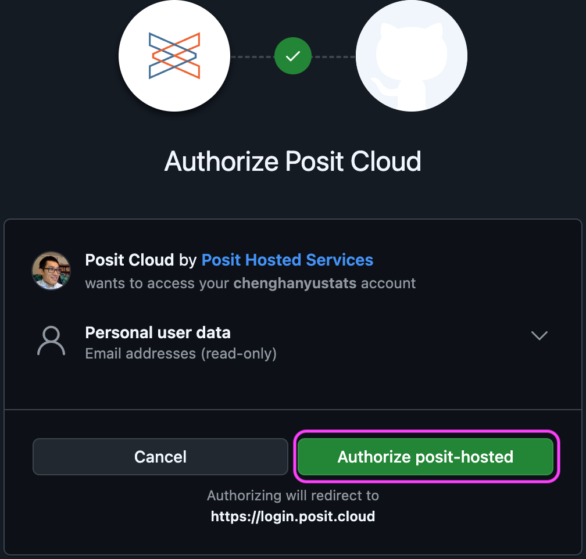
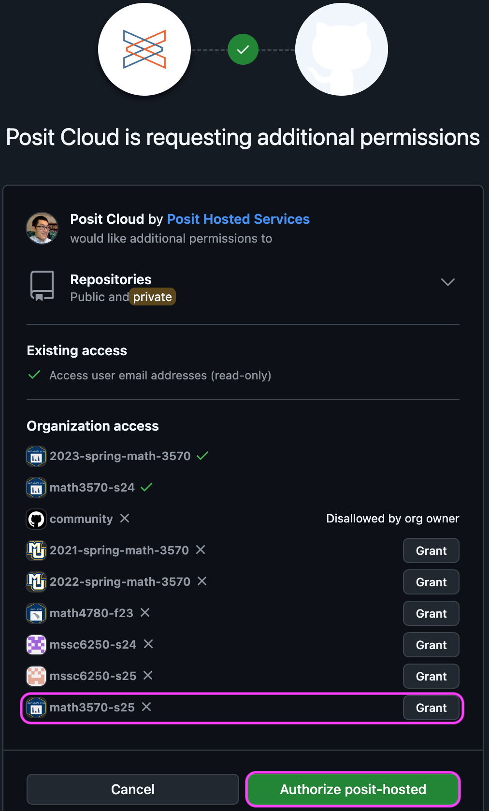
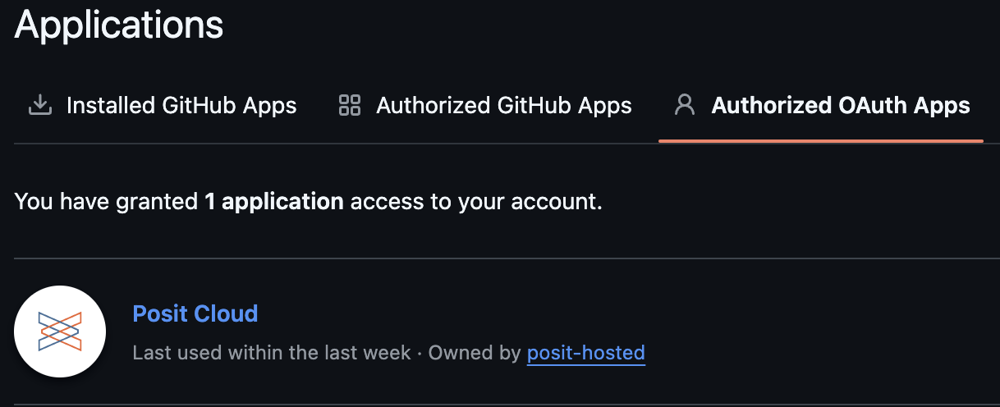
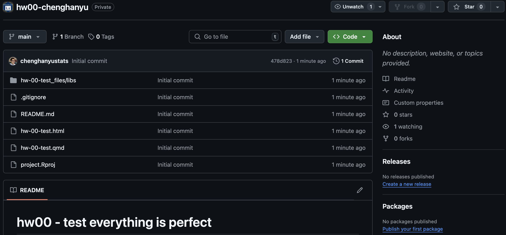
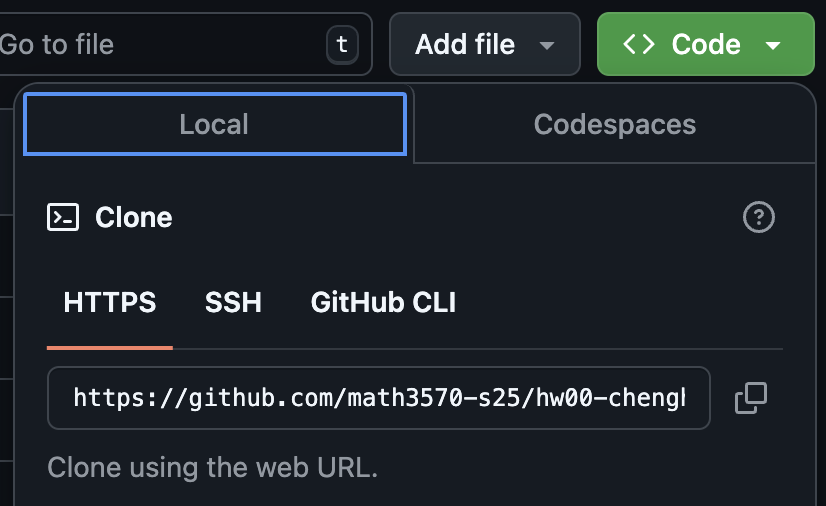
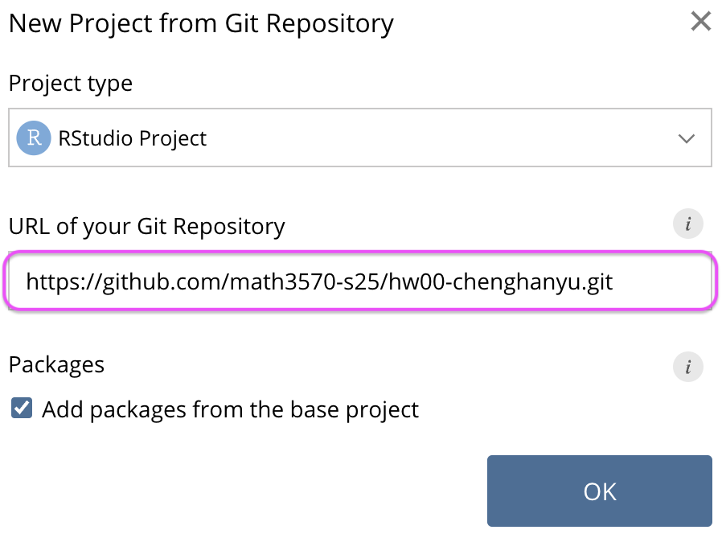
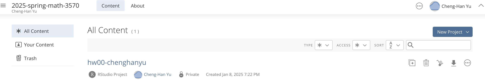
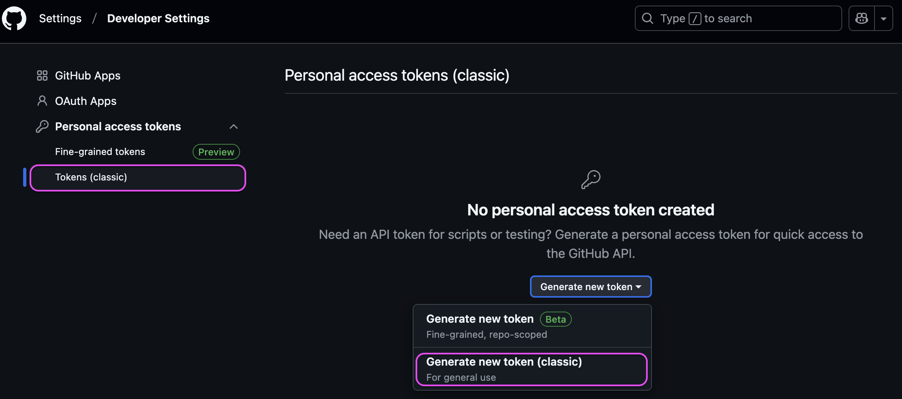
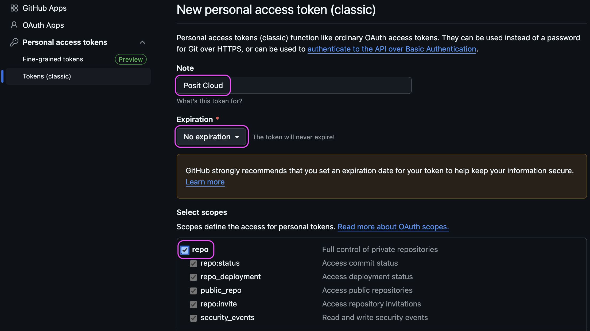

Lab Exercise: Git/GitHub
Note
Git Ready for Data Science
Go to https://github.com/ to create a GitHub account if you don’t have one.
- Use the same username and email address of your Posit Cloud.
Account (topright) > Settings
- Emails > Uncheck “Keep my email address private” (Link your R/Python work to GitHub)
- Public Profile > Name and nice picture!
Share your GitHub username at https://forms.office.com/r/RUmTn3gadG, so I can invite you to join our course organization math3570-s25.
Please accept my invitation to join the GitHub organization math3570-s25.
Connecting Posit Cloud and GitHub Together
Connect Posit Cloud and GitHub: Step 1
Posit Cloud cannot recognize your GitHub account unless you connect them each other.
In Posit Cloud, click on your name on the top-right corner to open the right menu.
Click on Authentication.

Connect Posit Cloud and GitHub: Step 2
- In the Authentication window, check the box for Enabled.

When check Enabled, will jump to GitHub page shown in the next.
Connect Posit Cloud and GitHub: Step 3
- For your GitHub page, click on the green box that says “Authorize posit-hosted”.

Connect Posit Cloud and GitHub: Step 4
Back to the Authentication of Posit Cloud, check Private repo access also enabled.
Make sure math3570-s25 shows up under Organization access.
Click on Grant.
Click on the green box “Authorize posit-hosted”.

When check Private repo access also enabled, will jump to GitHub page as shown.
Connect Posit Cloud and GitHub: Step 5
- Once you’re done, both of these boxes should be checked.

Connect Posit Cloud and GitHub: Step 6
- Confirm that you’ve linked up your GitHub and Posit Cloud accounts GitHub settings > Applications. Should see Posit Cloud listed as an authorized app under Authorized OAuth Apps.

If you see RStudio is under the Authorized Apps, congratulations! Your RStudio and GitHub are now linked together!
GitHub to Posit Cloud
GitHub to Posit Cloud: Step 1
- Each of your assignments will begin with the following steps.
- Go to the repo named hw00-yourusername I created for you.

GitHub to Posit Cloud: Step 2
- On GitHub,
- click on the green Code button, select HTTPS.
- click on the clipboard icon on the right to copy the repo URL, such as
https://github.com/math3570-s25/hw00-chenghanyu.git

GitHub to Posit Cloud: Step 3
- Go to Posit Cloud and into the course workspace 2025-spring-math-3570.
- Create a New Project from Git Repo.

You will need to click on the down arrow next to the New Project button to see this option.
GitHub to Posit Cloud: Step 4
- Copy and paste the URL of your assignment repo into the dialog box.
- Hit
OK, and you’re good to go!

GitHub to Posit Cloud: Step 5
- Click hw00-yourusername to do your assignment in Posit Cloud!

Done! We learned the entire process of cloning a repo on GitHub to Posit Cloud as a project.
Next, we’ll see how to keep your revision record (commit) and send (push) the latest revised version of your work from Posit Cloud to GitHub!
Posit Cloud to GitHub
Personal Access Token (PAT): Step 1
GitHub has removed the support for Password Authentication for Git operations.
Before we can send our work in Posit Cloud to GitHub, we need Personal Access Token (PAT)
Settings > Developer settings

GitHub has removed the support for Password Authentication for Git operations for more safety from 08/13/2021.
Personal Access Token (PAT): Step 2

Personal Access Token (PAT): Step 3

Personal Access Token (PAT): Step 4

Personal Access Token (PAT): Step 5
- Copy and paste your PAT to a secrete and safe space!!

Posit Cloud to GitHub: Step 1 - Edit your file
Open the quarto file
hw-00-test.qmd, in YAML change the author to your name.Click Render to generate your beautiful document. (If asked to install any packages, please do!)

Posit Cloud to GitHub: Step 2 - Commit changes
- Go to the Git tab in your RStudio.
- Click on Commit. This shows you the difference between the last committed state of the document and its current state that includes your changes.
- Check Staged box to add files to be committed.
- Write “Update author’s name” in the Commit message box and hit Commit.

Posit Cloud to GitHub: Step 3 - Push changes
- We’ve made an update and committed this change locally.
- It’s time to push the changes to your repo on GitHub, so that others (Dr. Yu) can see your changes.
- Click on Push.
- In the prompted dialogue box, enter your GitHub user name, and your password (PAT).
Posit Cloud to GitHub: Step 3 - Updated Repo
Back to your GitHub repo and refresh it.
The online repo is now synced with your local project in Posit Cloud.